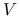
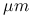
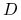
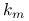
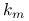

Switch on sampling of cloud properties (reff/tau/dlwc) by photons. This option needs mc_backward. The optical properties contributing to the result for each pixel are integrated using the photon weight  in the following way:
 |
For each internal wavelength, one [basename]_[wvl].cldprp file with
the following format is created where values marked with top are taken at
first cloud contact:
ix iy




 



Values denoted with hit are taken at the last cloud contact
before hitting the sensor, while the the water content gradient is
taken at the last cloud scattering before hitting the sensor (information
about cloud surface orientation).